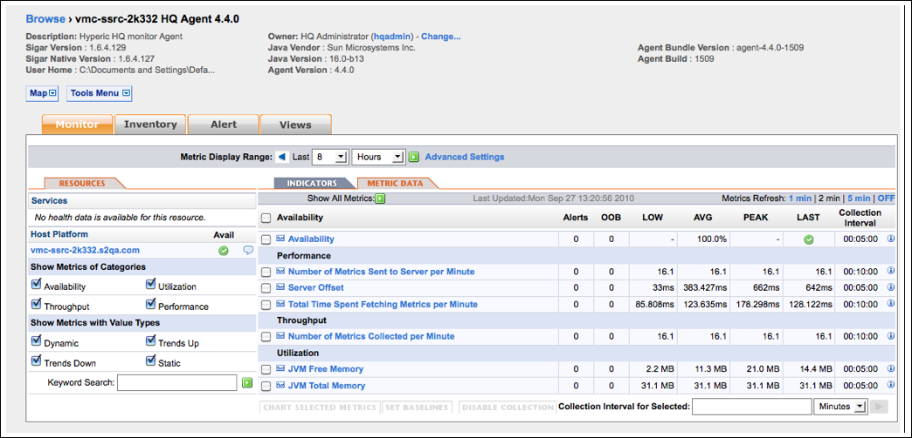

Topics marked with * relate to features available only in vFabric Hyperic.
The Hyperic Agent monitors itself. You can tailor the metric collection settings for an Hyperic Agent, use agent metrics to troubleshoot problems, and base alerts on agent metrics or events. This page describes the metrics and monitoring views for an Hyperic Agent.
For information about metrics that indicate Hyperic Agent problems, see Troubleshoot Agent and Server Problems.
Agent Monitoring Defaults
The metrics that the agent reports for itself by default are:
- Availability
- JVM Free Memory
- JVM Total Memory
- Number of Metrics Collected Per Minute
- Number of Metrics Sent to the Server Per Minute
- Server Offset
- Total Time Spend Fetching Metrics per Minute
See the Hyperic Agent Metrics section for a list of all supported Hyperic Agent metrics.
View Agent Indicators Charts
The Indicators page for an Hyperic Agent charts the agent's indicator metrics, by default:
- JVM Free Memory
- JVM Total Memory
- Number of Metrics Collected Per Minute
To view the Indicators page for an Hyperic Agent:
- Click Resources > Browse.
- Click Servers.
- Select HQ Agent from the Server Type pull-down.
The screenshot below is the Indicators page for an Hyperic Agent.

View Agent Metric Data
The Metric Data page for an Hyperic Agent displays all of the metrics collected for the agent in tabular form.
To view the Metric Data page for an Hyperic Agent:
- Click Resources > Browse.
- Click Servers.
- Select HQ Agent from the Server Type pull-down.

Hyperic Agent Metrics
The table lists all of the metrics that can be collected for an Hyperic Agent. For information about using agent metrics to troubleshoot problems, see Troubleshoot Agent and Server Problems.
| Category | Metric | Notes |
|---|---|---|
| Availability |
|
|
| Availability | Collected by default. | |
| Start Time | ||
| Up Time | ||
| Throughput | |
|
| Number of Active Threads | ||
| Number of Metrics Collected | ||
| Number of Metrics Collected per Minute | By default, this is an indicator metric. | |
| Number of Metrics which Failed to be Collecte | ||
| Number of Metrics which Failed to be Collected per Minute | ||
| Number of Requests Served | ||
| Number of Requests Served per Minute | ||
| Number of Scheduled Metrics | ||
| Performance | ||
| Maximum Time Spent Fetching a Metric | ||
| Maximum Time Spent Processing a Request | ||
| Minimum Time Spent Fetching a Metric | ||
| Minimum Time Spent Processing a Request | ||
| Number of Connection Failures | ||
| Number of Connection Failures per Minute | ||
| Number of Metric Batches Sent to Server | ||
| Number of Metric Batches Sent to Server per Minute | ||
| Number of Metrics Sent to Server | ||
| Number of Metrics Sent to Server per Minute | Collected by default. | |
| Server Offset | Collected by default. | |
| Total Time Spent Fetching Metrics | ||
| Total Time Spent Fetching Metrics per Minute | Collected by default. High value can indicate overloaded agent or problem with scheduling thread. | |
| Total Time Spent Processing Requests | ||
| Total Time Spent Processing Requests per Minute | ||
| Total Time Spent Sending Metrics to Server | ||
| Total Time Spent Sending Metrics to Server per Minute | ||
| Utilization | |
|
| Cpu Total Time | ||
| Cpu Total Time per Minute | ||
| JVM Free Memory | By default, this is an indicator metric. | |
| JVM Total Memory | By default, this is an indicator metric. | |
| Open File Descriptors | ||
| Resident Memory Used | "Resident Memory" is the amount of memory the Hyperic Agent occupies in memory. |
|
| Time Spent in System Mode | ||
| Time Spent in System Mode per Minute | ||
| Time Spent in User Mode | ||
| Time Spent in User Mode per Minute | ||
| Total Memory Used |